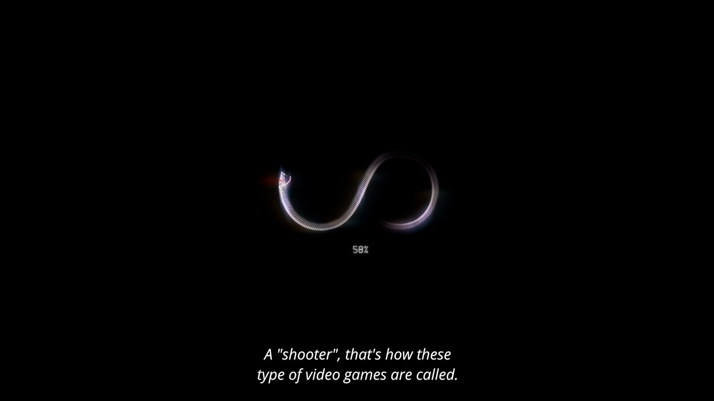
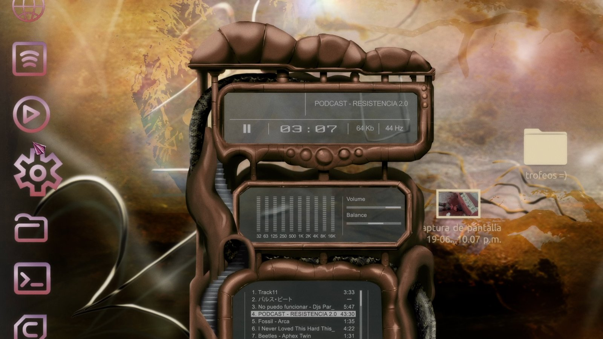
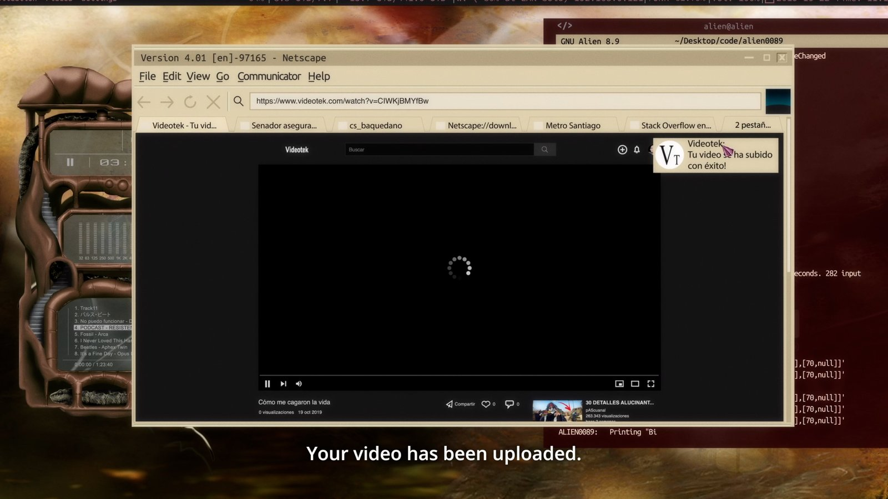
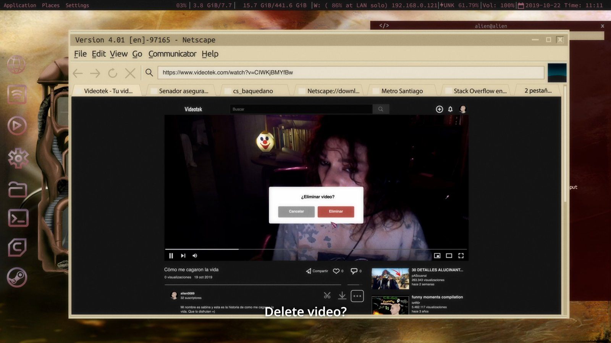
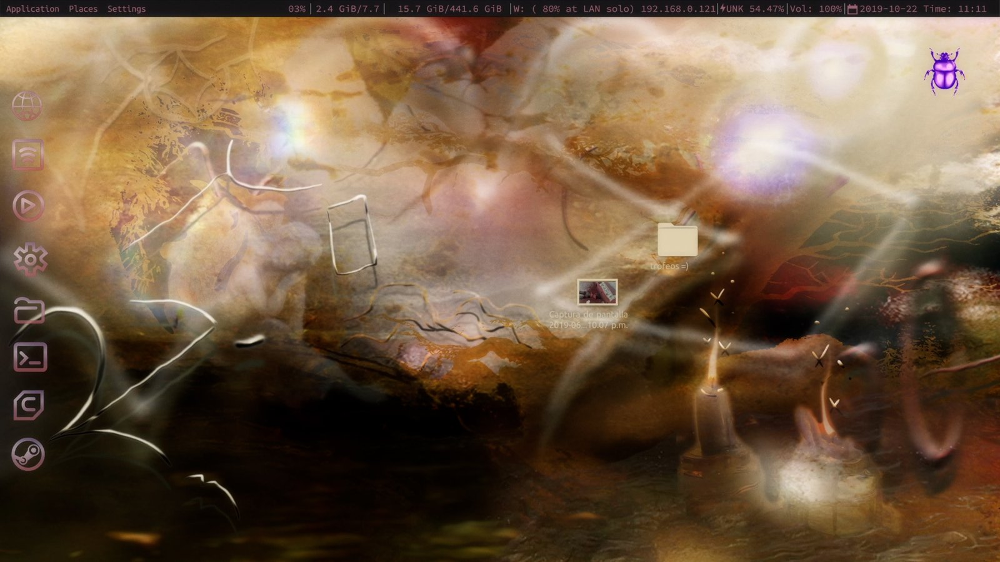

aLiEN0089





Trabajo de arte 2D para aLiEN0089 (CL, ARG), dirigida por Valeria Hoffman, 21 minutos, estrenada en el Sundance Film Festival 2023.





Trabajo de arte 2D para aLiEN0089 (CL, ARG), dirigida por Valeria Hoffman, 21 minutos, estrenada en el Sundance Film Festival 2023.